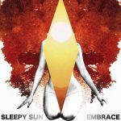
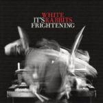
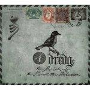
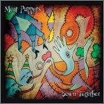
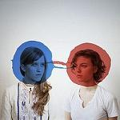
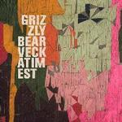
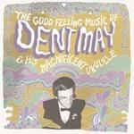
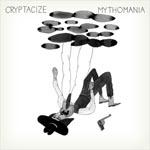
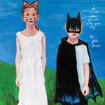

Music Reviews
-

Sleepy Sun Embrace
A heavy, ambitious rock album with solar flares of greatness.
Ryan Faughnder kicks it old school -

White Rabbits It's Frightening
Brooklyn band's sophomore album is produced by Spoon frontman Britt Daniel.
Michael Skinnider reviews... -

Dredg The Pariah, The Parrot, The Delusion
Dredg's fourth album is supposedly inspired by Salman Rushdie. If that doesn't qualify it as art rock, nothing will.
Kevin Liedel puts on his mortarboard and reviews... -

Dananananaykroyd Hey Everyone!
Scottish six-piece Dananananaykroyd attempt to weld together every possible music genre on a début album as confused as it is inventive... possibly in a futile attempt to deflect attention from that name
Joe Rivers does his best to get the right number of A's and N's... -

Meat Puppets Sewn Together
I'm not so sure Kurt Cobain would be covering these songs if he played an acoustic set today.
Andy Pareti reviews... -

The Dirty Projectors Bitte Orca
The sixth album from Dave Longstreth's Dirty Projectors features some of the band's strongest work to date.
Nick Fenn reviews... -

Grizzly Bear Veckatimest
Worth the hype?
Ryan Faughnder defers to two contrasting voices to find out... -

Dent May & His Magnificent Ukulele The Good Feeling Music of Dent May & His Magnificent Ukulele
Recent Paw Tracks signee's debut album would be fun if it weren't for his would-be witty ironic persona.
Michael Skinnider reviews... -

Cryptacize Mythomania
Ex-Deerhoof guitarist Chris Cohen experiments with the generic and makes something generic.
Sean Caldwell continues his search for the name brand... -

Julie Doiron I Can Wonder What You Did With Your Day
And we can wonder if Doiron will go the path of sadcore folk guitarist or of fully realized indie band (hint: pick the second one!).
Andy Pareti feels like he's watching Juno again...